Español 1.5
Capítulo 2
Joseph V. Casillas
Middlebury College: Verano 2015
Repaso
Hemos visto
- Vocabulario:
- El tiempo libre
- Gramática:
- Gustar
- Preguntas
- El presente progresivo
- Tarea (opcional)
- GS1-1, GS1-2, GS1-3
¿Qué están haciendo?
¿Qué están haciendo?
¿Qué están haciendo?

¿Qué están haciendo?
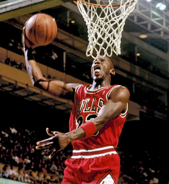
¿Qué están haciendo?

¿Qué están haciendo?

¿Qué están haciendo?
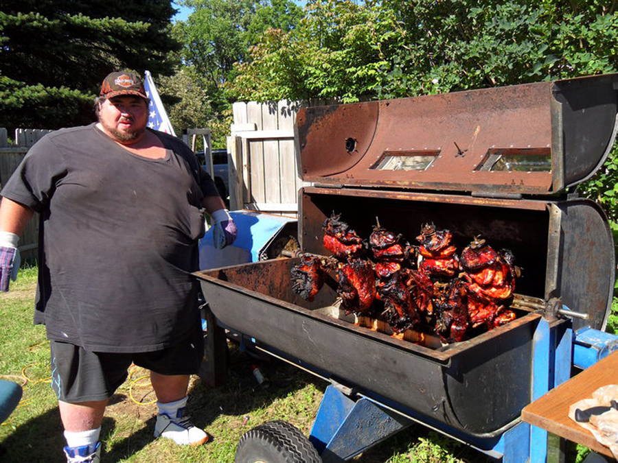
Puentes Capítulo 2
El plan

- Vocabulario:
- Horarios
- fechas; de viaje
- Gramática:
- Verbos de cambio radical
- Como hacer una grabación
- Estrategias para la comprensión auditiva
Una pruebita
¿A qué hora... ?: cómo hablar de horarios
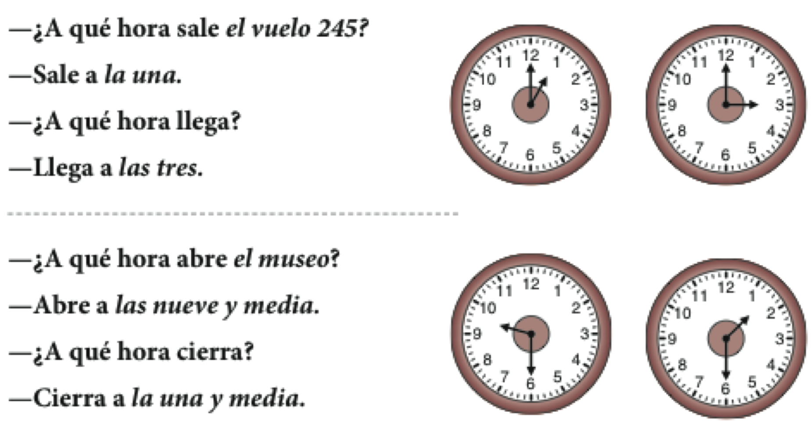
Cómo decir la hora
¿Qué hora es?
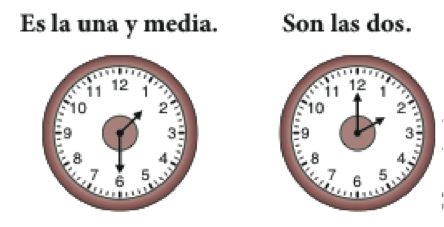
de la mañana
Cómo decir la hora
Perdón, ¿me puede decir la hora?

de la tarde
¿Qué hora es?: dos formas de decir la hora
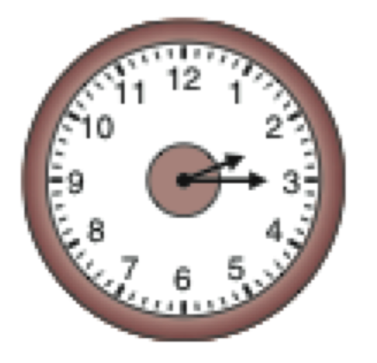
Son las dos y cuarto.
Son las dos y quince.
¿Qué hora es?: dos formas de decir la hora

Son las ocho menos veinte.
Son las siete y cuarenta.
¿Qué día es hoy?: los días de la semana
Hoy es...
| Lunes | Martes | Miércoles | Jueves | Viernes | Sábado | Domingo |

- ¿Qué día es hoy?
- ¿En qué día estamos?
- ¿Cuándo está abierto el museo?
- ¿Cuándo está cerrado?
¿Cuál es la fecha de hoy?: los meses del año

- Hoy es...
Para planificar un viaje: el tipo de viaje

Información importante sobre la excursión
 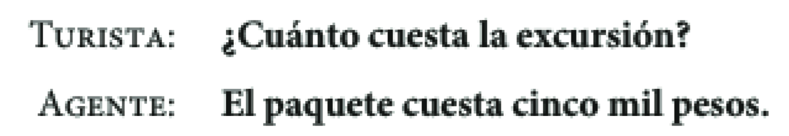
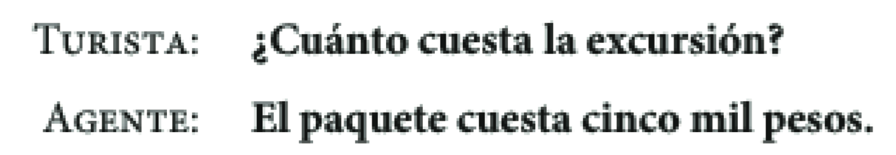
Más datos y métodos de pago
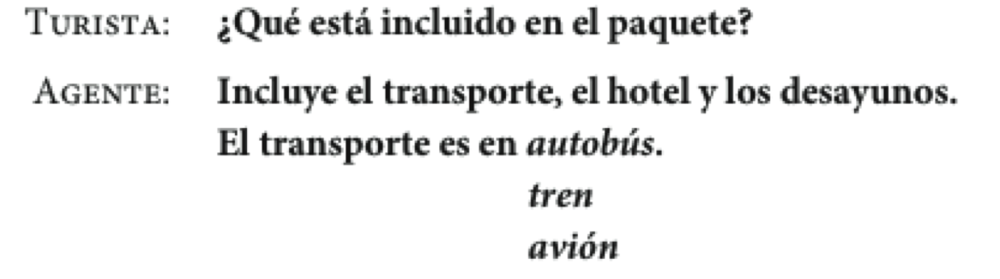

Las frases verbales para expresar los planes
- Cuando hablamos de nuestros planes, hay construcciones que son muy útiles...
- ir + a + infinitivo
- esperar + infinitivo
- pensar + infinitivo
Vamos a viajar a México.
Espero visitar muchos museos.
¿Piensas visitar el museo de historia el domingo?
Las frases verbales para expresar las preferencias
- Cuando queremos hablar de nuestras preferencias, hay construcciones que son muy útiles...
- querer + infinitivo
- me gustaría + infinitivo
- preferir + infinitivo
Quiero viajar en junio.
Me gustaría regresar el jueves, día 10 de julio.
Prefiero salir el domingo 6 de junio.
Las frases verbales para expresar las obligaciones
- deber + infinitivo
- necesitar + infinitivo
- tener + que + infinitivo
Debo planificar el viaje.
Necesito hablar con el agente de viajes.
Tengo que buscar un mapa de la ciudad.
Verbos irregulares
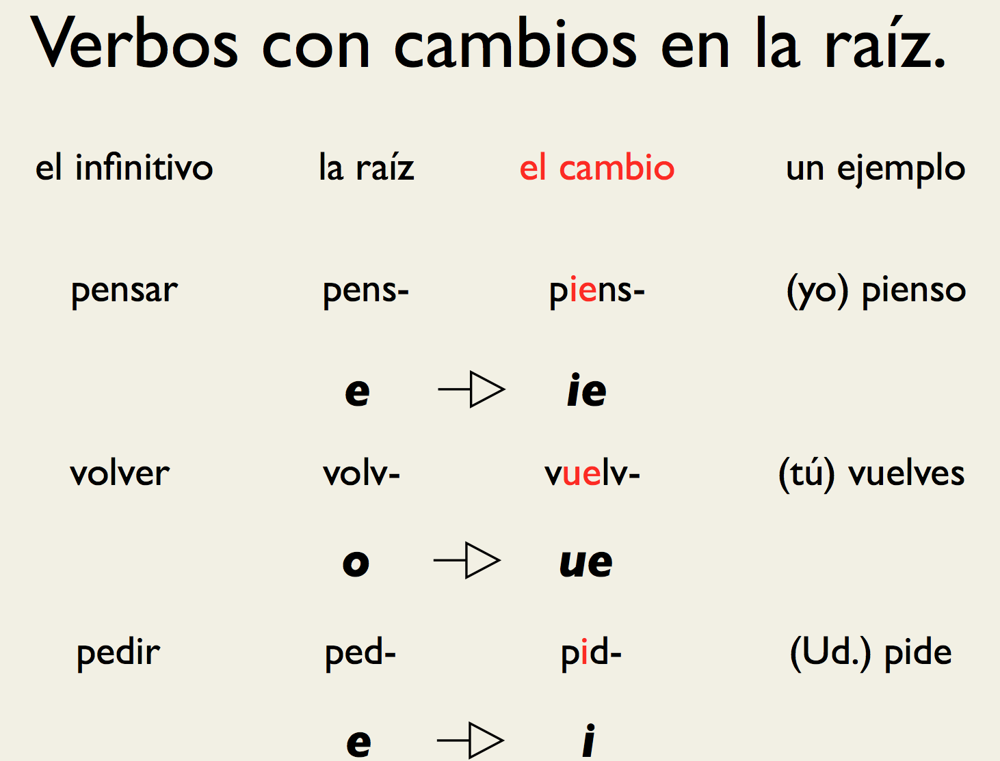
Verbos irregulares

Verbos irregulares
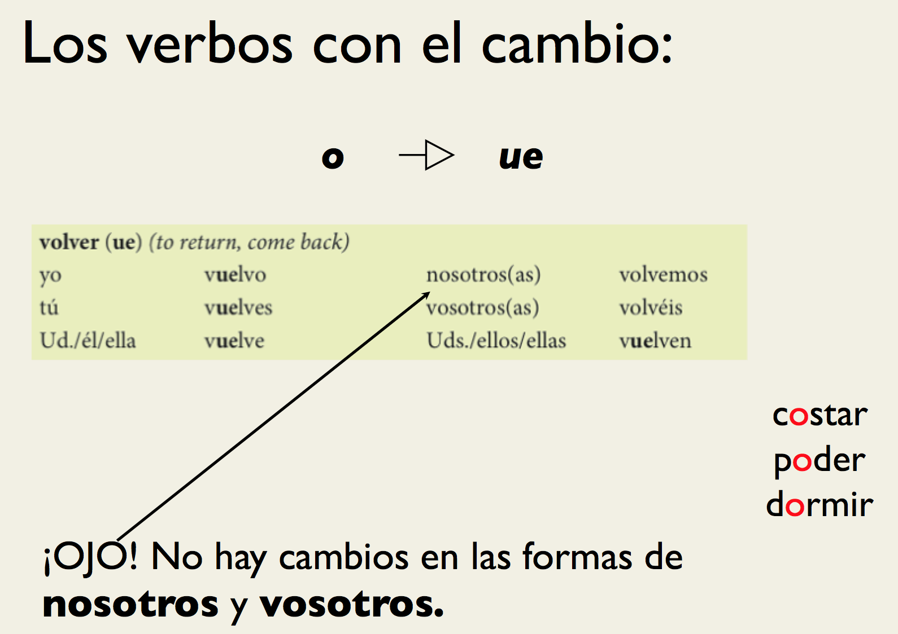
Verbos irregulares

Verbos irregulares

Como hacer una grabación
Estrategias para la comprensión auditiva
Repaso
Hemos visto
- Horarios
- Fechas; de viaje
- Verbos de cambio radical
- Tarea
- correcciones de la presentación oral
- opcional: libro de ejercicios
- CA2-6
- CA2-7
- CA2-9
- Pruebita el lunes
Repaso - Semana 1
Gramática
- Los sustantivos
- Número
- Género
- Artículos
- definidos
- indefinidos
- Pronombres personales
- Ser, estar, tener, ir
- Pronombres posesivos
- Verbos regulares
- Gustar
- Preguntas
- de Sí/No
- de información
- El presente progresivo (gerundio)
- Verbos irregulares (cambio radical)
Vocabulario
- Para sobrevivir (presentarse, instrucciones, hablar con el profesor)
- La sala de clase
- El alfabeto
- Los números
- Saludos
- Origen
- La familia
- El tiempo libre
- Horarios/Fechas
- Los viajes
Puentes capítulo 2.2
El plan
- Vocabulario:
- El hotel
- más números
- Gramática:
- Verbos irregulares
- Estrategias para la comprensión auditiva
Actividad verbos irregulares
- 2-14 p. 68
Pruebita
Pruebita
- jugar (1a persona singular)
- pensar (2a persona singular)
- querer (1a persona plural)
- empezar (3a persona plural)
- poder (3a persona singular)
- servir (1a persona singular)
- juego
- piensas
- queremos
- empiezan
- puede
- sirvo
¡No hay pistas!
En un hotel: para conseguir una habitación
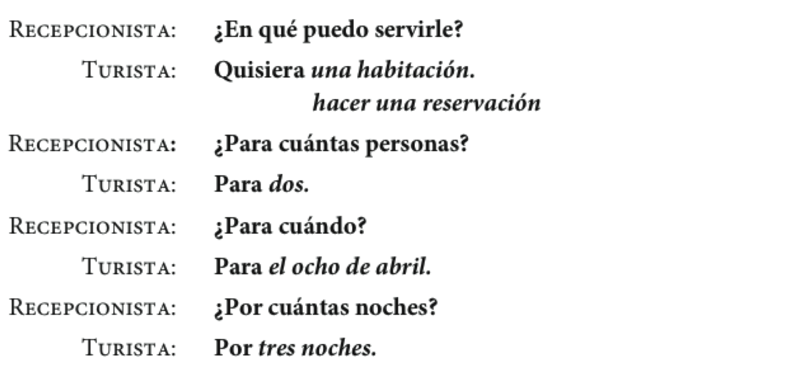
En un hotel: para conseguir una habitación
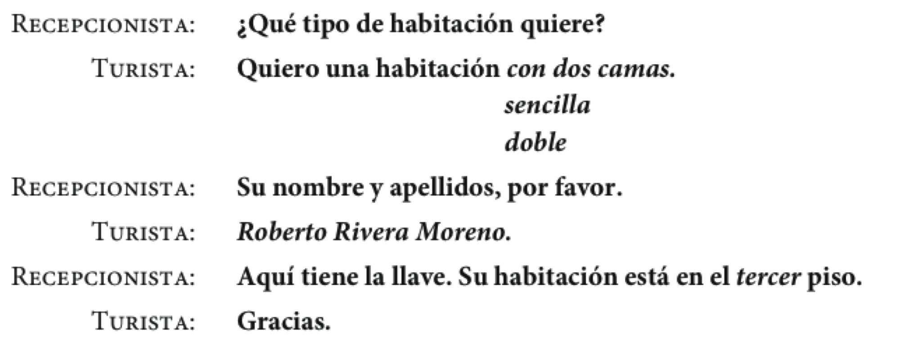
En un hotel: unas preguntas para el recepcionista
 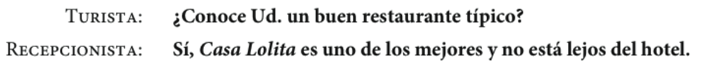
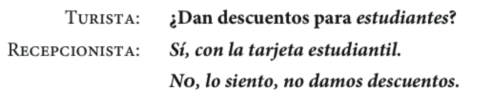
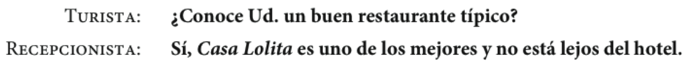
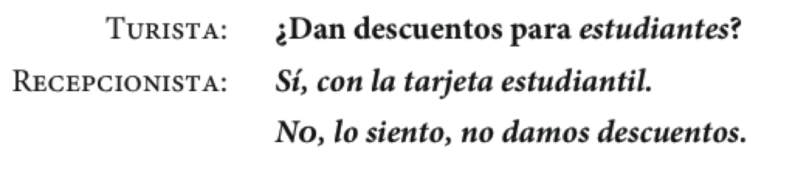
En un hotel: ¿En que piso está... ?
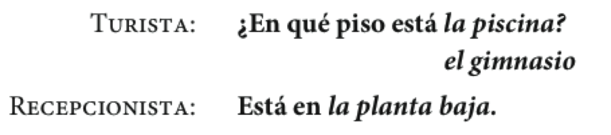

- Actividad 2-19 p. 71
- Actividad 2-20 p. 71
Descanso (10 minutos)

Los números de 100 a 10,000,000
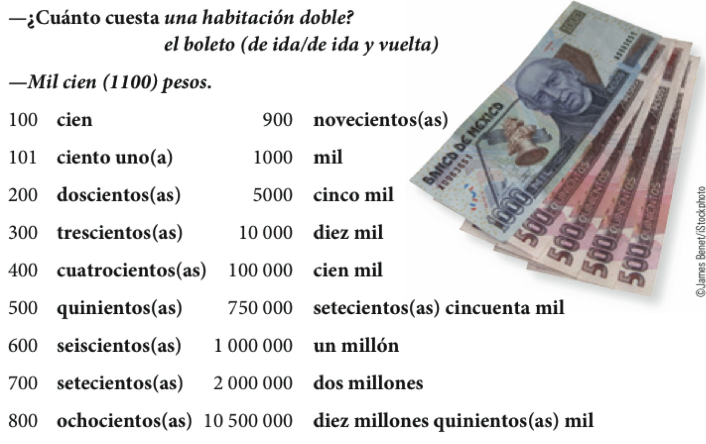
- Actividad 2-22 p. 72
- Actividad 2-25 p. 73
Los verbos irregulares con -go: la forma yo
| Infinitivo | Yo | Otras personas |
|---|---|---|
| hacer | hago | haces, hace, hacemos, hacéis, hacen |
| poner | pongo | pones, pone, ponemos, ponéis, ponen |
| salir | salgo | sales, sale, salimos, salís, salen |
| traer | traigo | traes, trae, traemos, traéis, traen |
| traer | traigo | traes, trae, traemos, traéis, traen |
Los verbos de -go con cambios en la raíz
| tener | venir | decir | |
|---|---|---|---|
| yo | tengo | vengo | digo |
| tú | tienes | vienes | dices |
| Usted/él/ella | tiene | viene | dice |
| Nosotros(as) | tenemos | venimos | decimos |
| Vosotros(as) | tenéis | venís | decís |
| Ustedes/ellos/ellas | tienen | vienen | dicen |
Otros verbos irregulares en la forma yo
| Infinitivo | Yo | Otras personas |
|---|---|---|
| conducir | conduzco | conduces, conduce, conducimos, conducéis, conducen |
| conocer | conozco | conoces, conoce, conocemos, conocéis, conocen |
| dar | doy | das, da, damos, dais, dan |
| saber | sé | sabes, sabe, sabemos, sabéis, saben |
| ver | veo | ves, ve, vemos, veis, ven |
Saber vs. conocer
- Saber: se utiliza para información
- Sé la respuesta
- Sé hacer reservaciones en línea.
- ¿Sabes dónde está el banco?
- Conocer: se utiliza para las personas y los lugares
- Conozco Nueva Orleans.
- ¿Conoces al agente de viajes?
Expresiones particulares

- Actividad 2-28 p. 77
- Actividad 2-29 p. 77
- Actividad 2-30 p. 77
Estrategias para la comprensión auditiva
- Con un compañero haz una lista de estrategias que puedes utilizar para ayudarte a comprender el español mejor.
Repaso
- Vocabulario
- el hotel
- los números
- Verbos irregulares
- e > ie
- e > i
- o > ue
- u > ue
- verbos -go
Recordad...
- la bota
- verbos -go cambian en forma de yo
- Actividad 2-28 p. 77
- Actividad 2-29 p. 77
- Actividad 2-30 p. 77